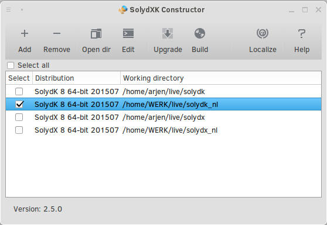
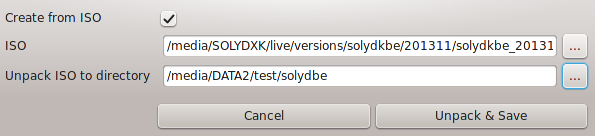
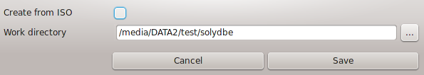
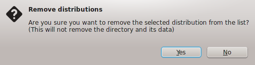
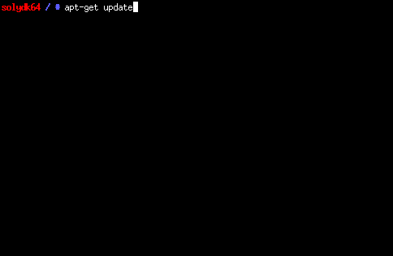

|
SolydXK Constructor helps building your custom SolydXK ISO, and was solely created for maintaining the current SolydXK ISO's, but it might benefit those who want to build their custom SolydXK ISO.
You can download SolydXK ISO's here: http://downloads.solydxk.com
SolydXK Constructor needs to start from the terminal. The terminal is your best friend, because all output is written to the terminal.

Content
- Add distribution
- Remove distributions
- Open directory
- Edit in terminal
- Dist-upgrade distributions
- Build ISO's
- Use Debian live as base
- Important files
1. Add distribution
Unpack an ISO
Browse for the downloaded ISO, and select a directory to unpack the ISO to.

The button to browse for the unpack directory comes available if the path to the ISO exists.
Add an existing directory
If you previously unpacked an ISO, and removed the distribution form SolydXK Constructor's list, you can add the existing directory by unchecking the "Create from ISO" checkbox

The Save button comes available if both the path to the ISO, and the unpack directory exist.
2. Remove distributions
This will only remove the selected distributions.
The distribution directory, and its contents will NOT be deleted.

3. Open directory
Opens the selected working directory in the default file manager.
4. Edit in terminal
Open a chrooted terminal, and start installing (and removing) all the packages you need.
It's easier to change configuration in the distribution's root directory, and not through this terminal.

5. Dist-upgrade distributions
This consists of 5 different steps:
- Update the apt cache (apt-get update).
- Upgrade (apt-get dist-upgrade).
- Build the EFI files (/boot/grub/efi.img and /boot/efi/bootx64.efi).
- Download offline packages (/lib/live/mount/medium/offline).
- remove the old kernel (if any). You can either choose to keep it, or remove it.
6. Build ISO's
The building process starts with cleaning up the distribution.
You can find the bash file that is being executed here: /usr/lib/solydxk/constructor/cleanup.sh
The building process can take a long time.
If you need to quit the process before it ends, you can open a terminal and run: sudo killall mksquashfs
You need to repeat that if you have more than one distribution selected in the list.
7. Use Debian live as base
You can even use a Debian Live DVD as a base: http://www.debian.org/CD/live
If you use Debian, you'll need the "isolinux" directory (and its contents) to replace the "isolinux" directory in the Debian unpack directory.
After that you'll need to configure the distribution from scratch. It's a lot of work, but for a CE (Community Edition) well worth it.
8. Important files
- /usr/lib/solydxk/constructor/distros.list
Here are all distribution directories saved.
- /usr/lib/solydxk/constructor/trackers
List with torrent trackers (one per line).
- /usr/lib/solydxk/constructor/webseeds
List with web seeds (without ISO name; one per line).
- /usr/lib/solydxk/constructor/cleanup.sh
This script cleans up prior to building the ISO.
- /usr/lib/solydxk/constructor/rmoldkernel.sh
Removes the old kernel in case of a kernel update.
- /usr/lib/solydxk/constructor/offline.sh
Bash to download/copy offline available packages/files.
Files are live available at: /lib/live/mount/medium/offline/.
- boot/isolinux/isolinux.cfg
Here, the isolinux (startup) menu is configured.
- boot/isolinux/splash.jpg
When editing the isolinux background image, make sure to save it without any extra information. In Gimp's export as jpeg window, uncheck all in the 'Advanced options' section.
|